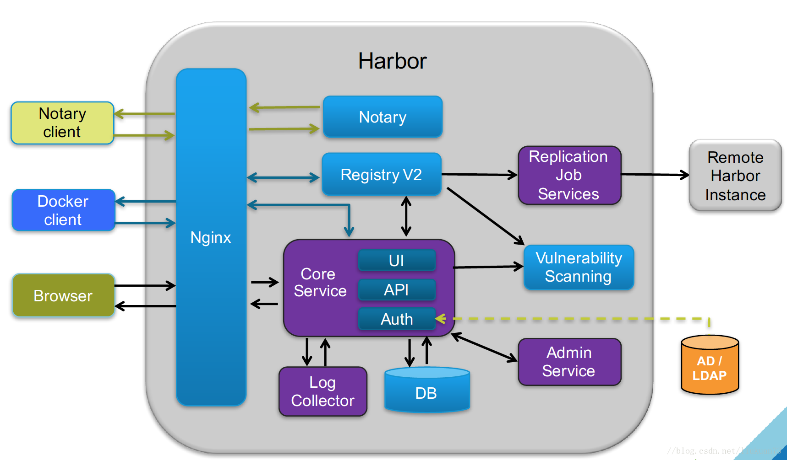

1. Harbor
Harbor Docker企业级私有仓库
1. Harbor简介¶
Harbor是一个用于存储和分发Docker镜像的企业级Registry服务器。 镜像的存储harbor使用的是官方的docker registry(v2命名是distribution)服务去完成。harbor在docker distribution的基础上增加了一些安全、访问控制、管理的功能以满足企业对于镜像仓库的需求。harbor以docker-compose的规范形式组织各个组件，并通过docker-compose工具进行启停。 docker的registry是用本地存储或者s3都是可以的，harbor的功能是在此之上提供用户权限管理、镜像复制等功能，提高使用的registry的效率。Harbor的镜像拷贝功能是通过docker registry的API去拷贝，这种做法屏蔽了繁琐的底层文件操作、不仅可以利用现有docker registry功能不必重复造轮子，而且可以解决冲突和一致性的问题。
1.1 Harbor架构¶

主要组件包括:
- Proxy：对应启动组件nginx。它是一个nginx反向代理，代理Notary client（镜像认证）、Docker client（镜像上传下载等）和浏览器的访问请求（Core Service）给后端的各服务；
- UI（Core Service）：对应启动组件harbor-ui。底层数据存储使用mysql数据库，主要提供了四个子功能：
- UI：一个web管理页面ui；
- API：Harbor暴露的API服务；
- Auth：用户认证服务，decode后的token中的用户信息在这里进行认证；auth后端可以接db、ldap、uaa三种认证实现；
- Token服务（上图中未体现）：负责根据用户在每个project中的role来为每一个docker push/pull命令issuing一个token，如果从docker client发送给registry的请求没有带token，registry会重定向请求到token服务创建token。
- Registry：对应启动组件registry。负责存储镜像文件，和处理镜像的pull/push命令。Harbor对镜像进行强制的访问控制，Registry会将客户端的每个pull、push请求转发到token服务来获取有效的token。
- Admin Service：对应启动组件harbor-adminserver。是系统的配置管理中心附带检查存储用量，ui和jobserver启动时候需要加载adminserver的配置；
- Job Sevice：对应启动组件harbor-jobservice。负责镜像复制工作的，他和registry通信，从一个registry pull镜像然后push到另一个registry，并记录job_log；
- Log Collector：对应启动组件harbor-log。日志汇总组件，通过docker的log-driver把日志汇总到一起；
- Volnerability Scanning：对应启动组件clair。负责镜像扫描
- Notary：对应启动组件notary。负责镜像认证
- DB：对应启动组件harbor-db，负责存储project、 user、 role、replication、image_scan、access等的metadata数据。
1.2 Docker Registery¶
- 1.Registry用于保存docker镜像，包括镜像的层次结构和元数据
- 2.用户可自建Registry，也可以使用官方的Docker Hub
Docker Registery 分类
- 1.Sponsor Registry 第三方Registry，供客户和Docker社区使用
- 2.Mirror Registry 第三方Registry，只让客户使用
- 3.Vendor Registry 由发布Docker镜像的供应商提供的Registry
- 4.Private Registry 通过设有防火墙和额外的安全层的私有实体提供的Registry
2. 系统部署基础¶
服务器的ip规划
| 机器 | IP | 系统 |
|---|---|---|
| Docker Registry | 192.168.183.134 | Centos 7（随便你什么系统） |
| Docker Client | 192.168.183.133 | Centos 7（随便你什么系统）推送镜像 |
| Docker Client | 192.168.183.135 | Centos 7（随便你什么系统）拉取镜像 |
名词解释
| No | 名词 | 解释 |
|---|---|---|
| 1 | Docker Registry | Docker私有仓库（本地） |
| 2 | Docker Client | 上传和下载的docker客户端 |
3. Docker自带仓库¶
3.1 安装官方自带仓库¶
3.1.1 安装¶
[root@leco ~]# yum install docker-registry [root@leco ~]# yum info docker-registry Loaded plugins: fastestmirror Loading mirror speeds from cached hostfile * base: mirrors.aliyun.com * epel: mirrors.aliyun.com * extras: mirrors.aliyun.com * updates: mirrors.aliyun.com Available Packages Name : docker-registry Arch : x86_64 Version : 0.9.1 Release : 7.el7 Size : 123 k Repo : extras/7/x86_64 Summary : Registry server for Docker URL : https://github.com/docker/docker-registry License : ASL 2.0 Description : Registry server for Docker (hosting/delivering of repositories and images).
3.1.2 查看安装信息¶
[root@leco ~]# rpm -ql docker-distribution /etc/docker-distribution/registry/config.yml /usr/bin/registry /usr/lib/systemd/system/docker-distribution.service /usr/share/doc/docker-distribution-2.6.2 /usr/share/doc/docker-distribution-2.6.2/AUTHORS /usr/share/doc/docker-distribution-2.6.2/CONTRIBUTING.md /usr/share/doc/docker-distribution-2.6.2/LICENSE /usr/share/doc/docker-distribution-2.6.2/MAINTAINERS /usr/share/doc/docker-distribution-2.6.2/README.md /var/lib/registry [root@leco registry]# pwd /etc/docker-distribution/registry [root@leco registry]# cat config.yml version: 0.1 log: fields: service: registry storage: cache: layerinfo: inmemory filesystem: rootdirectory: /var/lib/registry # 仓库的存储路径，可以根据实际情况修改（找大点的空间配置） http: # 仓库协议 addr: :5000 # 仓库端口
3.1.3 启动仓库¶
[root@leco registry]# systemctl start docker-distribution.service
3.1.4 开机自启动¶
[root@leco registry]# systemctl enable docker-distribution.service Created symlink from /etc/systemd/system/multi-user.target.wants/docker-distribution.service to /usr/lib/systemd/system/docker-distribution.service.
3.1.5 查看服务¶
[root@leco registry]# ss -tnl State Recv-Q Send-Q Local Address:Port Peer Address:Port LISTEN 0 100 127.0.0.1:25 *:* LISTEN 0 128 *:22 *:* LISTEN 0 100 ::1:25 :::* LISTEN 0 128 :::5000 :::* LISTEN 0 128 :::22 :::*
3.2 Docker客户端操作¶
找一个新的docker客户端测试推拉
3.2.1 打tag¶
现在客户端标签docker私有仓库地址。不打标签默认推送到docker github上
[root@localhost img4]# docker tag myweb:v0.3-11 192.168.183.134:5000/myweb:v0.3-11
3.2.2 查看tag信息¶
[root@localhost img4]# docker images |grep 5000
192.168.183.134:5000/myweb v0.3-11 44ef73a3a19b 39 minutes ago 18MB
[root@localhost img4]# docker push 192.168.183.134:5000/myweb:v0.3-11
The push refers to repository [192.168.183.134:5000/myweb]
Get https://192.168.183.134:5000/v2/: http: server gave HTTP response to HTTPS client
此时要在客户端改变配置，变成http协议（docker 仓库默认是https协议，我们使用http协议）
[root@localhost img4]# cat !$
cat /etc/docker/daemon.json
{
"registry-mirrors": ["http://3e930982.m.daocloud.io"],
"insecure-registries":["192.168.183.134:5000"]
}
其中insecure-registries后面是docker仓库的地址和端口。
[root@localhost img4]# systemctl restart docker
3.2.3 push¶
修改协议后重启docker然后在push镜像到私有仓库里面
[root@localhost img4]# docker push 192.168.183.134:5000/myweb:v0.3-11 The push refers to repository [192.168.183.134:5000/myweb] 347a19806329: Pushed 20555723c54b: Pushed a79fe6dff072: Pushed 87deea508850: Pushed 90c4db1d5ef5: Pushed cd7100a72410: Pushed v0.3-11: digest: sha256:be593f8f6e45181416242b37183b3c5429745e3623424a1a9b672afab898714e size: 1568
3.2.4 仓库查看¶
docker私有仓库端查看
[root@leco registry]# ls /var/lib/registry/docker/registry/v2/repositories/myweb/_layers/sha256/ 44ef73a3a19b95ae6f7e0c4bf92f0fcc876dce929340455c591430203b4bc151 4b15fa862ac67691a8bc682937be38197ebebe580f01b1bcc0ee823fc43709aa 5e38f0c1e3e667d4fd01ac85ebcd4337579471d841a925d4be81bde53a482614 7d4e05a01906143afc15671a53151ea9755dac230db376a8b8364b21ca774dbc 8aeac9a3205fce5e21ab65ccce330fe389a9aaf47e4b682970b1772ae25a1d73 b430473be128c1302a75e8381dfbaa45182fec81db4f75b749e4896d7816c2ea ff3a5c916c92643ff77519ffa742d3ec61b7f591b6b7504599d95a4a41134e28 可见从docker客户端push上的镜像已经推送过来，经过hash了。
3.2.5 pull¶
在其他机器上测试（pull镜像）
[root@leco registry]# cat /etc/docker/daemon.json
{
"registry-mirrors": ["http://3e930982.m.daocloud.io"],
"bip": "10.0.0.1/16",
"insecure-registries":["192.168.183.134:5000"]
}
[root@leco registry]# systemctl restart docker
[root@leco registry]# docker pull 192.168.183.134:5000/myweb:v0.3-11
v0.3-11: Pulling from myweb
ff3a5c916c92: Pull complete
b430473be128: Pull complete
7d4e05a01906: Pull complete
8aeac9a3205f: Pull complete
5e38f0c1e3e6: Pull complete
4b15fa862ac6: Pull complete
Digest: sha256:be593f8f6e45181416242b37183b3c5429745e3623424a1a9b672afab898714e
Status: Downloaded newer image for 192.168.183.134:5000/myweb:v0.3-11
[root@leco registry]# docker images
REPOSITORY TAG IMAGE ID CREATED SIZE
192.168.183.134:5000/myweb v0.3-11 44ef73a3a19b About an hour ago 18MB